1 First run: choose a PIN and save your recovery code
Safe World asks for a PIN before anything else, so protection is never switched on with nothing guarding it. Immediately after, it shows a recovery code — the only way back in if you forget the PIN.
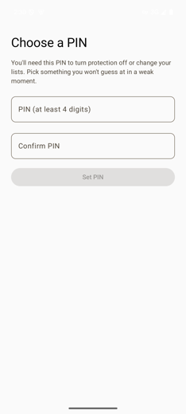
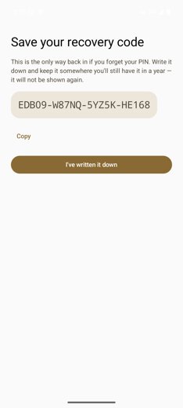
- Purpose
- Stops a moment of weakness from undoing your own setup. The PIN is friction you chose while thinking clearly.
- If you forget
- Tap Forgot your PIN? on any prompt and enter the recovery code. That code is then used up, and a fresh one is issued.
- Lost both?
- Only clearing the app's data resets it — which also wipes every setting and the uninstall friction.
2 Turn protection on
The single switch that starts and stops all website blocking. Android will ask once for VPN permission — that "VPN" runs entirely on your phone and connects to no server.
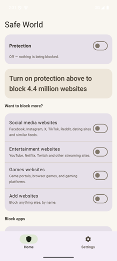
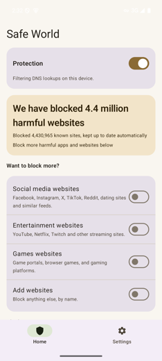
- Turning on
- Free — one tap.
- Turning off
- Asks for your PIN.
- Purpose
- The card deliberately never claims protection while the switch is off. An app that says "4.4 million blocked" above a dead switch is the exact lie this one refuses to tell.
3 See it working: bad site blocked, normal site fine
Blocking happens at the lookup stage, so a blocked site never loads at all — you get the browser's own "can't be reached" page, and none of its content is ever fetched.
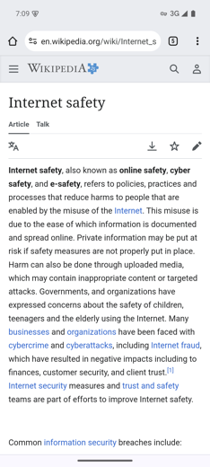
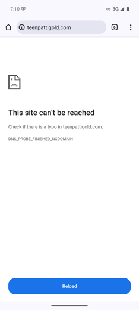
DNS_PROBE_FINISHED_NXDOMAIN. Nothing from the site is downloaded or shown.- Why it looks like an error
- Because it is one, on purpose: the phone is told the address doesn't exist. That's cheaper and more private than intercepting pages.
- Covers
- Every app and browser on the phone, not just Chrome.
- Limits
- Sites reached by raw IP, or apps using their own encrypted lookups, can slip past. Block apps (section 6) closes that.
4 Block more: social media, entertainment, games
Three optional categories, all off by default. These are the ones you add because you want them — so switching one on never asks for anything.
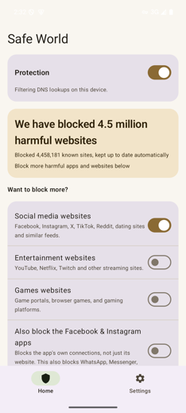
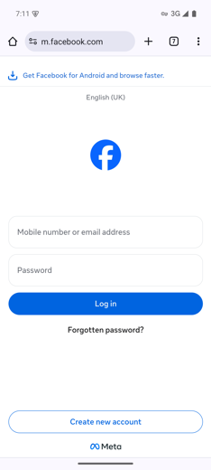
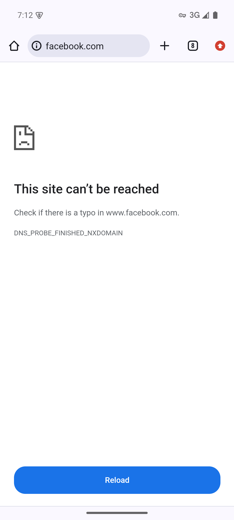
- Turning on
- Free.
- Turning off
- Asks for your PIN.
- Honest warning
- The Facebook & Instagram app row says out loud that it also blocks WhatsApp and Messenger — they run on the same servers, and there is no way to separate them.
5 Add your own websites
Anything the categories don't cover, blocked by name.
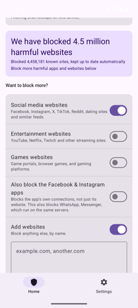
example.com also covers shop.example.com.- Adding
- Free — saving a list that keeps everything it had goes straight through.
- Removing
- Asks for your PIN, because saving a shorter list is a weakening.
6 Block apps, not just their websites
Some apps never make ordinary web lookups, so blocking their website does nothing. This stops the apps themselves from reaching the internet.
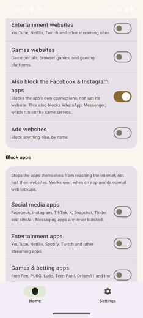
- The trade-off
- Safe World must check every connection the phone makes, not just web lookups. That uses more battery, and the app asks before turning it on.
- Still private
- All checking happens on the phone. Nothing is sent anywhere.
- Never blocked
- Messaging apps, so a blocked phone can still reach family.
- Unblocking
- Asks for your PIN.
7 Make protection stick (always-on VPN)
Android allows only one VPN at a time — so installing any other VPN app silently switches Safe World off. This is the only way to prevent that, and only you can turn it on.
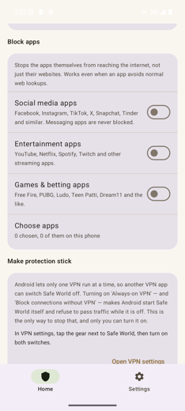
- What it does
- Android itself starts Safe World, and refuses to pass any traffic while it isn't running.
- Why it's outside the app
- Android deliberately won't let an app grant this to itself — it has to be you, in system settings.
- If it happens anyway
- Safe World notices, warns you it stopped filtering, and names the other VPN as the likely cause.
8 Uninstall protection
Makes Safe World harder to delete in a moment of temptation.
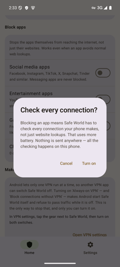
- What it does
- Registers as a device admin, so Android refuses to uninstall the app while it's on.
- Honest limit
- It is friction, not a lock — the app itself says so. It can still be removed from Android's settings.
- Turning off
- Asks for your PIN, and you're warned if it ever gets switched off without you.
9 What the PIN actually gates
The same prompt appears everywhere something would reduce protection — and nowhere else.
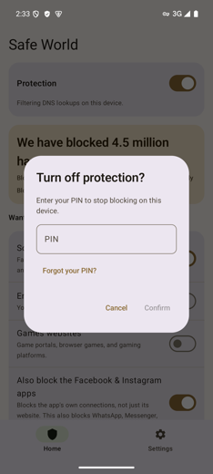
- Asks for PIN
- Turning protection off · turning a category off · unblocking apps · removing sites you added · changing what's always allowed · disabling uninstall protection.
- Never asks
- Anything that blocks more.
- Wrong guesses
- Too many attempts locks the prompt for a while. The recovery code is exempt — being locked out is exactly when you'd need it.
10 Settings: language, PIN, always-allow, updates
The second tab. Everything here is housekeeping rather than blocking.
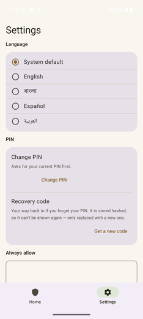
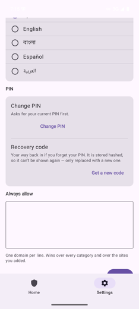
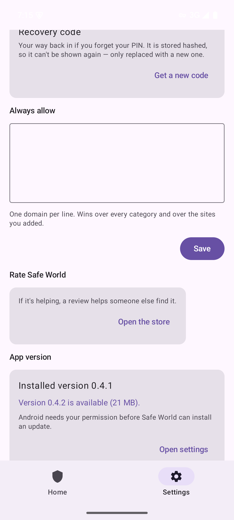
11 Optional: download the extra lists
Offered once, on first run. Some blocklists can't legally be bundled inside the app, so your device fetches them from the people who maintain them.
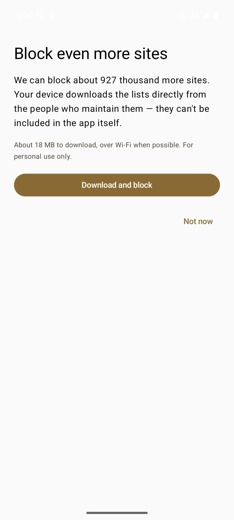
- Bundled lists
- Work offline, forever, with no network call at all.
- What's sent
- Nothing about you. Your device downloads a list; it never uploads what you browse.